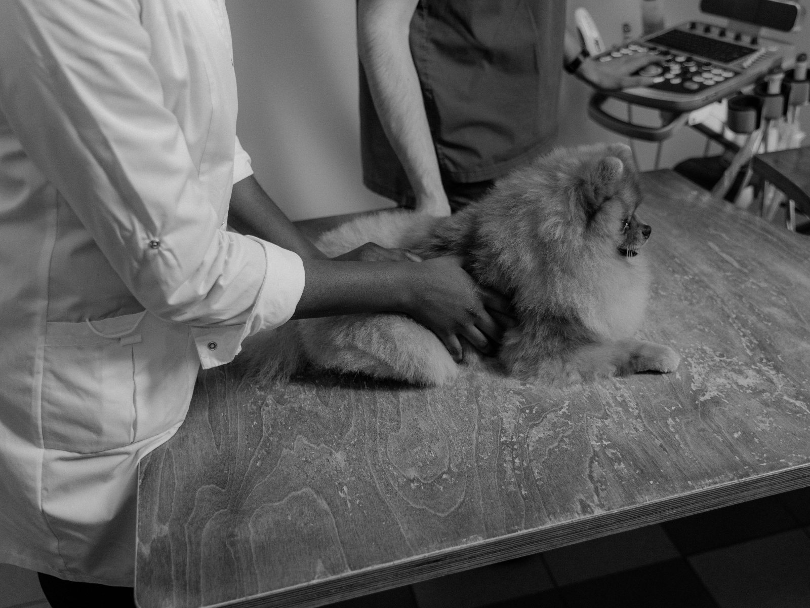
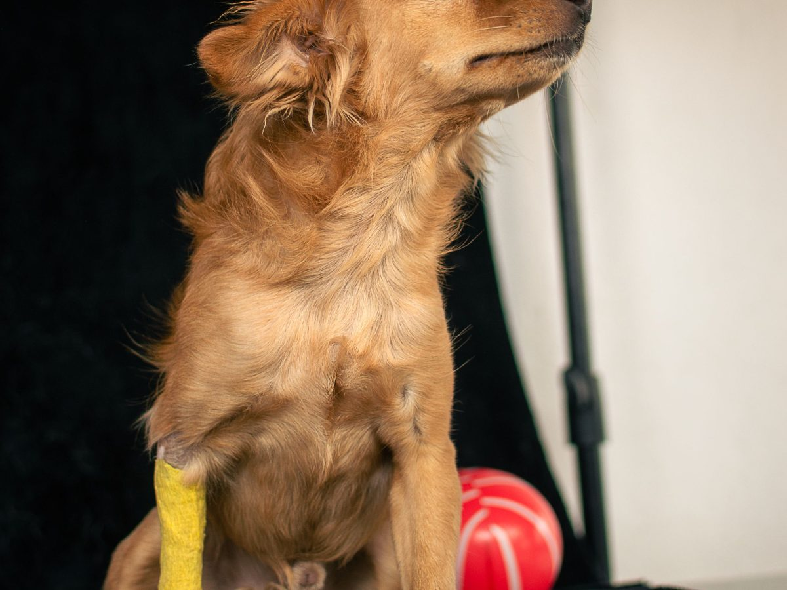
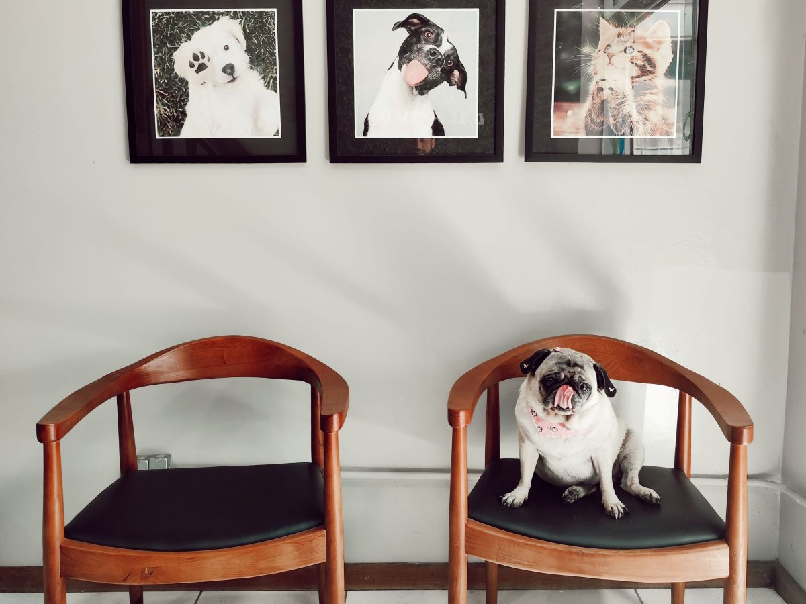
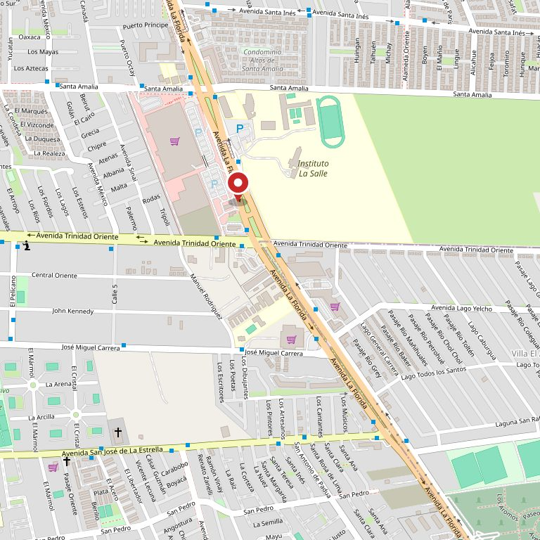

Consulta general
La revisión de siempre: se mira, se pesa, se pregunta y se explica.
La Florida · Av. La Florida 9350
El hospital atiende las 24 horas. Si su perro o su gato se puso mal de madrugada, lo primero no es salir corriendo: es llamar. Al teléfono contesta alguien que le va a decir si tiene que venir ahora o si puede esperar a mañana.
1.400+ reseñas en Google · 24 h todos los días
Todos los días del año, de noche incluida.
La gente de la comuna ya los conoce y lo escribió.
Los que aparecen hoy en su propia ficha de reservas.
Los dos dominios con su nombre son de otros negocios.
La pregunta de la madrugada
Nadie piensa bien de madrugada. Esta parte está escrita para leerse rápido, con una mano, mientras se busca la correa. Ordena, no diagnostica: lo que hay que hacer siempre es llamar.
Antes de salir, llame
(2) 2287 8700Contesta alguien del hospital. Cuéntele qué pasó y qué está viendo. Le va a decir si viene ahora, si puede esperar a mañana y qué hacer mientras llega.
Venga ahora
Probablemente aguanta hasta mañana
Aun así, llame. La llamada no cuesta nada y saca la duda.
Qué llevar
Acá no van dosis ni nombres de remedios, a propósito. Lo que se le da a un animal depende de su peso, de su edad y de lo que tenga, y eso lo dice el veterinario que lo está mirando. Un remedio de persona puede matar a un gato. Esta lista sirve para decidir si el viaje es ahora o mañana: nada más que eso.
Dirección
Av. La Florida 9350
La Florida, Santiago
Entrada de urgencias
Por ___, al costado de la entrada principal
Estacionamiento
___ estacionamientos frente al acceso
De madrugada
Timbre en ___ · la puerta queda ___
Las tres últimas están marcadas porque todavía no las tenemos confirmadas. Son las que más se agradecen a las tres de la mañana, y se completan en una llamada.
Lo de todos los días
Estos siete son los que aparecen hoy en su propia ficha de reservas: no los inventamos nosotros, están publicados con su nombre y su dirección.
La revisión de siempre: se mira, se pesa, se pregunta y se explica.
El calendario del cachorro y los refuerzos del adulto.
Pabellón propio, con la preparación y el control de después.
Para el que no se puede ir a la casa todavía. Es lo que hace que valga la pena que abran de noche.
Imagen en el momento, sin mandar al animal a otra parte.
Exámenes de sangre y orina para saber antes de tratar.
Control y prevención, que en verano es la mitad de las consultas.
En directorios aparecen además peluquería canina, hotel canino y pet shop. No los pusimos arriba porque esos no vienen de una ficha suya — si los hacen, suben con una frase cada uno.

Quién recibe
Cuando alguien llega de madrugada, lo que tranquiliza es saber a quién va a encontrar. Esa es la parte que ninguna ficha de reservas muestra y que una página propia sí puede mostrar.
Nombre · qué hace · turno
Nombre · qué hace · turno
Nombre · qué hace · turno
No inventamos nombres ni ponemos retratos de banco de fotos: los huecos quedan marcados para que se vea qué falta.
«A las tres de la mañana nadie entra a Instagram.
Busca en Google y llama al primero que diga 24 horas.»
La dirección
Sobre la avenida, en La Florida. La dirección sale de su propia ficha pública de reservas, que es —hoy por hoy— el único lugar de internet donde el hospital habla por sí mismo.


Estas fotos son de bancos de uso libre y no son del hospital. Están para que se vea de qué habla la página. Las de verdad las tienen ellos.
Contacto
Teléfono
Es un número de red fija. Contesta el hospital, no un mensaje grabado de otra empresa.
Dirección
Av. La Florida 9350
La Florida
Horario
24 horas
los 7 días
Correo y redes
___@___ · Facebook
Tienen Facebook. Instagram no aparece: se probaron dos usuarios y ninguno existe.

Para el dueño del hospital
Una ficha en un sistema de reservas ajeno, con su nombre, su dirección y sus servicios. Funciona y conviene dejarla. Pero es de otro y aparece junto a todas las demás veterinarias de la comuna, en la misma lista.
Y hay dos dominios que llevan su nombre. altolaflorida.cl es una escuela de conductores. veterinariaaltolaflorida.cl es una tienda de otra clínica, con otra dirección (Av. Perú 9600) y otros teléfonos. Quien busque su nombre en Google va a llegar a uno de esos dos.
Una página propia, en un dominio suyo, que a las tres de la mañana conteste tres cosas en diez segundos: están abiertos, este es el teléfono y esta es la dirección. Eso es lo que se busca de madrugada, y ninguna ficha de reservas lo pone primero.
Encima de eso, lo de esta demo: qué es urgencia de verdad, qué llevar, cómo llegar de noche, los siete servicios y quién está de turno. Es contenido que ya existe adentro del hospital y que hoy no está escrito en ninguna parte.
Una advertencia honesta. Existe una clínica de nombre muy parecido a dos kilómetros —Veterinaria Tecnovet Alto La Florida— y es la dueña de ese segundo dominio. No sabemos si son el mismo dueño con dos locales o dos negocios distintos con nombres que se cruzan. Si ese sitio es suyo, dígannoslo y la propuesta cambia: ahí el trabajo sería otro. Preferimos preguntarlo antes que darlo por sabido.
Demo hecha por CristalWeb · La información de esta página viene de su ficha pública de reservas y de Google, comprobada el 11-09-2026. Lo que está marcado con línea de puntos son huecos a completar, no datos inventados.